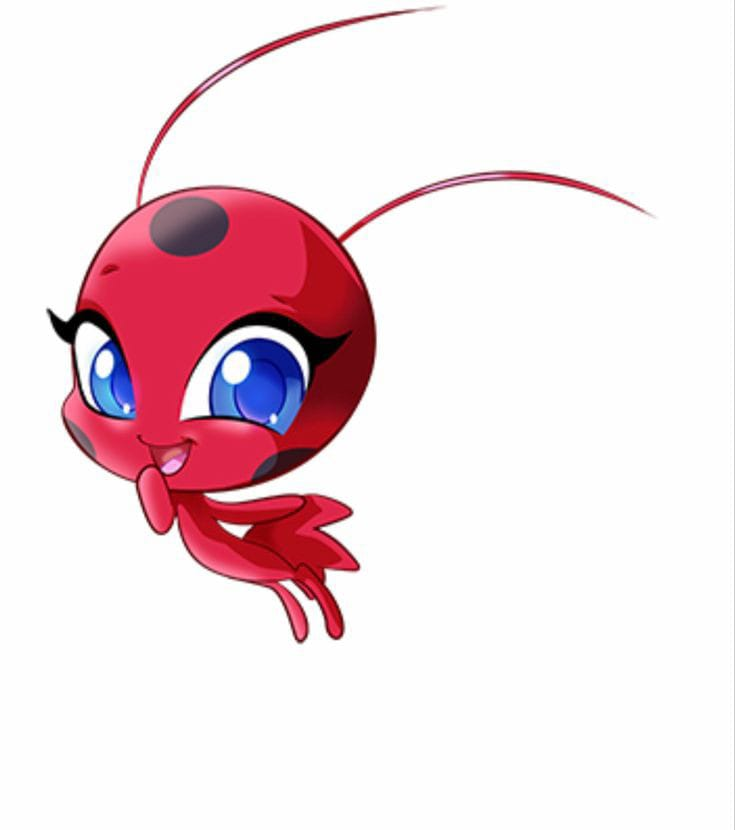

Tikki
Kwami da LadyBug
Criação
Tikki é o kwami da Criação, com seu poder, o portador pode usar os brincos para se transformar em um super-herói com tema de joaninha.
Plagg
Kwami do ChatNoir
Destruição
Plagg é o kwami da Destruição, com seu poder, o portador pode usar o anel para se transformar em um super-herói com tema de gato preto.
Trixx
Kwami da Rena Rouge
Ilusão
Trixx é o kwami da Ilusão, com seu poder, o portador pode usar o colar para se transformar em um super-herói com tema de raposa.
Wayzz
Kwami do Carapace
Proteção
Wayzz é o kwami da Proteção, com seu poder, o portador pode usar a pulseira para se transformar em um super-herói com tema de tartaruga.
Pollen
Kwami da QueenBee
Submissão
Pollen é o kwami da Submissão, com seu poder, o portador pode usar o pente de cabelo para se transformar em um super-herói com tema de abelha
Nooroo
Kwami do HawkMoth

Transmissão
Nooroo é o kwami da Transmissão, com seu poder, o portador pode usar o broche para se transformar em um super-herói com tema de borboleta
Duusu
Kwami da Mayura
Emoção
Duusu é o kwami da Emoção, com seu poder, o portador pode usar o broche para se transformar em um super-herói com tema de pavão